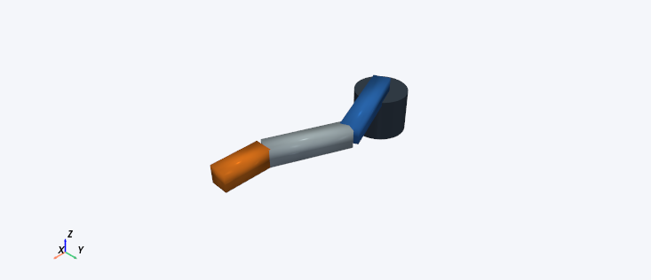
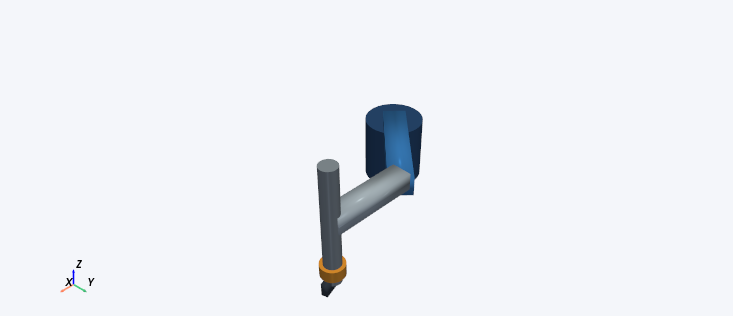
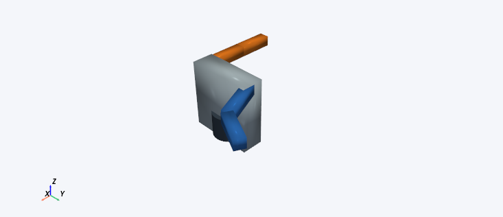

Three robots. Three short exercises.
URDF2DT curated teaching examples • self-contained solid bodies • MIT licence
Open in the application: choose Open URDF, then browse to one of the files below.
Project:
robots/curated/Windows application:
examples/curated/ beside URDF2DT.exe.
No downloads, ROS packages or external mesh files are needed. These are schematic teaching models, not manufacturer CAD or calibrated hardware.
Use radians/metres. If bodies are hidden, enable View → Scene layers → Robot meshes, use Show all in Model & Appearance, restore opacity and Fit robot. Tool/reference links intentionally have no body. Pictures are actual app captures with frames hidden; their poses are listed.
Three-joint serial arm
serial_arm/serial_arm.urdf
3 bounded revolute joints; link lengths 0.35, 0.28 and 0.17 m; 4 body visuals.

Expected appearance: A dark cylindrical base with blue, silver and orange solid arm links. Three rotary joints move a single planar chain. This is a teaching arm, not a UR5 or other manufacturer model.
Image pose: joint_1 = 0.4, joint_2 = -0.8, joint_3 = 0.4 rad.
Try it
Open serial_arm/serial_arm.urdf. In Joint motion set joint_1 to 1.5707963267948966 rad (90 degrees) and joint_2/joint_3 to zero. Open FK calculator, use the URDF model, reference base and target tool, and calculate. The target position should be approximately [0.000, 0.800, 0.180] m. Reset the pose: it becomes [0.800, 0.000, 0.180] m. Inspect the orange body and try its opacity slider.
RRPR SCARA
scara/scara_rrpr.urdf
4 movable joints: revolute, revolute, prismatic, continuous. Slide limits 0 to 0.18 m; 6 body visuals.

Expected appearance: A blue base and upper arm, silver forearm and vertical carriage, gold wrist and dark tool. Its vertical slide translates rather than rotating. Body geometry is schematic.
Image pose: shoulder = 0.5 rad, elbow = -0.8 rad, vertical_slide = 0.06 m, tool_yaw = 0.3 rad.
Try it
Open scara/scara_rrpr.urdf. Reset all joints, then set vertical_slide to 0.100 m while shoulder, elbow and tool_yaw stay zero. Use FK calculator with the URDF model, reference world and target tool. Expect approximately [0.673, 0.127, 0.020] m. Reset vertical_slide to zero: target height is 0.120 m. A positive slide value moves the tool downward. Try the tool_yaw joint and observe that the tool rotates without changing its origin.
Two-branch teaching robot
branched_robot/branched_robot.urdf
2 selectable paths, each with 2 bounded revolute joints; 4 movable joints in the whole tree; 6 body visuals.

Expected appearance: A dark base and silver torso with a blue arm and an orange arm extending from opposite sides. Both arms are visible together. Each arm is a two-joint serial path; the full tree is not treated as one DH chain.
Image pose: left_shoulder = 0.4 rad, left_elbow = 0.7 rad; inactive right arm at zero.
Try it
Open branched_robot/branched_robot.urdf. Select base → left_tool in Robot Structure. Set left_shoulder to zero and left_elbow to 1.5707963267948966 rad. With URDF FK, reference base and target left_tool, expect approximately [0.280, 0.400, 0.400] m. The orange arm stays at its default pose. Switch the chain to base → right_tool; save first if prompted about changes. Set right_shoulder to zero and right_elbow to the same angle. Expect [-0.280, -0.400, 0.400] m for right_tool relative to base. The blue arm is now shown at its default pose.
Finish with validation and a saved project
Review and accept every DH frame in order, then run global FK validation. Each active chain should give a sampled PASS at the bundled default tolerances. This checks URDF/DH agreement at sampled poses; it does not prove continuous-space correctness, collision safety, dynamics or hardware accuracy. Save to a new project folder, keeping these examples unchanged.
The branched example edits and validates one active serial path at a time. Switching chains starts an independent editor session; it is not a simultaneous dual-arm controller.
Asset licences
All three URDFs and embedded body geometry, this guide and its screenshots are original URDF2DT teaching material under the MIT licence. The SCARA is copied unchanged from the project's original RRPR fixture. No third-party meshes or textures are included. Keep the copyright notice and licence when redistributing.
Full MIT licence · Asset provenance · Text guide